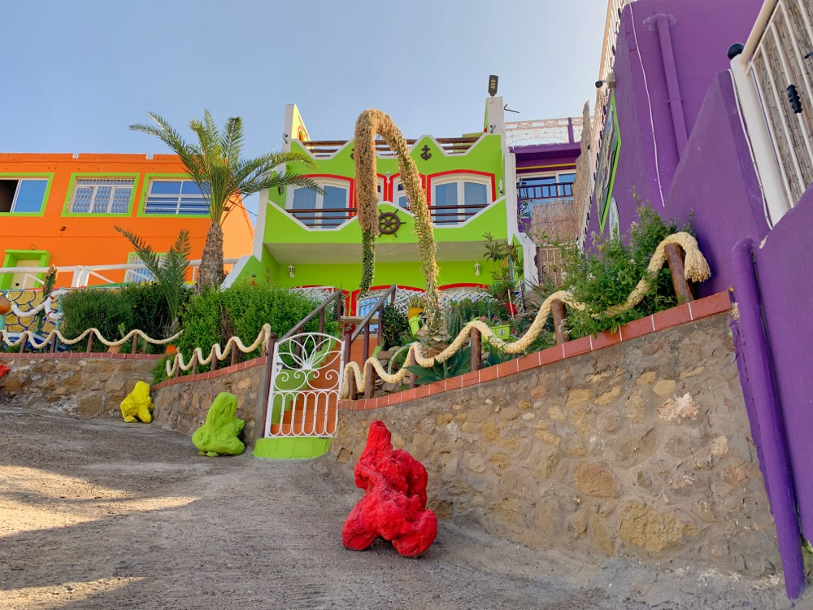

Where Is the Rainbow Village?
Nestled 32 kilometers north of Agadir along the stunning Atlantic coastline, Aghroud (the Rainbow Village) is Morocco's most colorful hidden gem. This vibrant fishing village isn't marked on most tourist maps, but it's easily accessible by car along National Route 1, making it the perfect off-the-beaten-path destination for travelers seeking authentic experiences.
Located near Tamri beach, Aghroud (also spelled Aghrod locally) spans a beautiful coastal area where each building proudly displays its own unique color scheme—from brilliant blues representing the nearby Atlantic Ocean, to vibrant oranges, sunny yellows, and passionate pinks reflecting the area's artistic spirit. This is where you'll encounter the real pulse of coastal Moroccan life.

The Origin of the Colors – Aghroud's Artistic Transformation
Aghroud's colorful transformation wasn't the result of a government initiative or urban planning project. Instead, it emerged organically from the dreams and determination of local artists and residents who collaborated to bring beauty and pride to their coastal village.
Local resident Ali Amerkouk notes that the transformation has been remarkable: "We wanted to show that our village matters. We may be a small fishing community, but we have something special—artistic spirit and community pride. When local artists painted the first few houses, other families saw the beauty and wanted to do the same. Now our village looks like a living rainbow."
The colorful makeover project began when local artists and residents collaborated to transform Aghroud from a traditional fishing village into a vibrant artistic destination. Each color was thoughtfully selected to represent the natural environment—blues for the Atlantic Ocean, greens for nearby nature, golden yellows for the sun that blesses the coast, and fiery reds for the warmth of the community. What started as an artistic initiative has blossomed into a symbol of unity and cultural pride.
A Canvas for Dreams
The painting project in Aghroud has evolved into something much deeper than decoration. Local artists have contributed murals and street art throughout the village, turning blank walls into canvases that tell stories of Moroccan culture, Berber heritage, and coastal life. The transformation has had tangible benefits—approximately 30,000 annual visitors now come to Aghroud, leading to a 40% increase in tourism revenue that has created numerous job opportunities for local residents.
Everyday Life in the Village
Unlike tourist destinations, the Rainbow Village isn't a museum or attraction—it's a living, breathing neighborhood. Here's what you'll experience when you visit with a respectful approach:
Local Markets & Tea Houses
Around the colorful houses, you'll find small local markets (souks) where residents shop daily for fresh produce, bread, and essentials. The vendors here don't speak tourist prices—they offer real Moroccan prices for real Moroccan products.
The community teahouses (called "cafés" locally) buzz with daily life. Men gather to discuss politics over sweet mint tea, while women meet to exchange news and share recipes. These aren't the polished tourist cafés; they're authentic social hubs where you can immerse yourself in local culture.
Children at Play
One of the most beautiful aspects of the Rainbow Village is seeing children play in the colorful streets. Soccer games break out spontaneously, kids run between the vividly painted houses, and the neighborhood feels alive with youthful energy. The safety and community spirit here are palpable—families watch out for each other's children, and everyone knows everyone.
Artisan Workshops
Within the Rainbow Village, you'll discover small artisan workshops where local craftspeople create everything from traditional pottery to leather goods. Unlike commercial tourist shops, these workshops offer genuine handmade products and the opportunity to see masters at work.
How to Visit Responsibly
The Rainbow Village is a residential neighborhood, not a tourist attraction. As such, it's crucial to visit with respect and cultural sensitivity. Here's how to be a good guest:
✅ Do's
- Visit with a local guide who can help you interact appropriately with residents
- Ask before taking photos of people or their homes—consent matters
- Purchase from local vendors to support the community economy
- Learn a few words in Arabic or Berber like "salam" (hello) and "shukran" (thank you)
- Dress modestly to respect local cultural norms
- Contribute positively by leaving the place better than you found it
❌ Don'ts
- Don't wander into yards or private spaces without permission
- Don't treat residents like tourist attractions—they're people living their lives
- Don't haggle aggressively or complain about prices—these are local shops, not tourist traps
- Don't visit during prayer times or family meals
- Don't take photos of women without explicit permission (cultural sensitivity is essential)
The Hidden Stories Behind Each Color
Every painted house in the Rainbow Village has a story. During our tours, our local guides share these narratives with guests:
Blue houses often belong to families with connections to fishing or the sea. "Our grandfather was a fisherman," explained one resident. "Blue reminds us of the ocean that fed our family for generations."
Orange and red homes signal warmth and hospitality. Many of these families love hosting guests and sharing tea. "Our door is always open," said the owner of a bright orange house.
Green dwellings reflect a connection to nature and agriculture. Several families in the Rainbow Village maintain small gardens or have roots in farming villages outside Agadir.
Purple and violet houses are often the most recent additions, painted by younger residents who wanted something unique. "We wanted our house to stand out," said a young couple. "Purple is rare in Morocco."
Join Our Local Experience Tour
Experience the Rainbow Village authentically through our carefully designed Agadir City & Local Life Tour. This isn't your typical bus tour—it's a curated journey into the heart of real Moroccan life.
Discover the Rainbow Village
Join our expert local guides for an authentic journey into Agadir's most colorful neighborhood. Hotel pickup, cultural insights, and respectful tourism guaranteed.
Book Your Tour Now →What's Included in Your Tour
- ✅ Comfortable hotel pickup and drop-off in air-conditioned vehicles
- ✅ Professional local guide who speaks Arabic, Berber, French, and English
- ✅ Visit to the Rainbow Village with permission and respect for residents
- ✅ Authentic mint tea experience at a local café
- ✅ Market visit to see daily life in action
- ✅ Historical context about Agadir's neighborhoods and community
- ✅ Maximum group size of 8 people for an intimate experience
- ✅ Opportunity to meet and interact with local families (when welcomed)
Why Aghroud (Rainbow Village) Matters
Aghroud represents something powerful in Moroccan society: the right of coastal communities to beauty, pride, and self-expression. It's a testament to what happens when local artists and residents collaborate to create something extraordinary from their fishing village heritage.
For tourists willing to venture beyond the Agadir beach resorts, Aghroud offers something rare: authentic connection with real coastal Moroccan life. You won't find large souvenir shops or tourist traps. Instead, you'll find genuine hospitality, colorful creativity, traditional fishing activities, and a community that has transformed itself into a vibrant destination while staying true to its coastal roots.
This village has become more than just painted buildings—it's a symbol of resilience, community spirit, and the Moroccan value of making life beautiful. Since its artistic transformation began, Aghroud has welcomed 30,000 annual visitors and seen a 40% increase in tourism revenue, creating jobs and opportunities for local families. It's proof that when communities work together, even a small fishing village can become a globally-recognized destination.
Planning Your Visit
Best Time to Visit: Morning hours (9 AM to 12 PM) or late afternoon (4 PM to 6 PM) offer the best light for photography and the most active community life.
Duration: A respectful visit typically takes 2-3 hours, including time for tea, market browsing, and conversation with residents.
Accessibility: The area is mostly flat and easily navigable. Wear comfortable walking shoes and bring water, especially in summer months.
Photography: The colorful streets are perfect for photography, but always ask permission before photographing people. Respect privacy and dignity.
Frequently Asked Questions
Conclusion: Finding Agadir's True Colors
Agadir is more than beautiful beaches and resort hotels. Just 32 kilometers north along the coast lies a world of authentic Moroccan coastal life, community spirit, and vibrant artistic culture. Aghroud (the Rainbow Village) represents this hidden gem—a place where local fishing families and artists collaborated to transform their village into a celebration of color, creativity, and coastal community spirit.
Visiting Aghroud isn't just about seeing colorful houses against the backdrop of the Atlantic Ocean. It's about understanding real coastal Moroccan life, connecting with fishing families (when welcomed), and witnessing how a small fishing village transformed itself through art while maintaining its traditional character. It's about tourism that respects, educates, and supports—not just photographs and moves on.
If you're the kind of traveler who seeks authentic experiences over staged attractions, Aghroud awaits. This village on the coast between Agadir and Essaouira offers a unique glimpse into coastal Moroccan culture, where the sounds of ocean waves meet the vibrant colors of community pride. Join us on the Agadir City & Local Life Tour and discover this coastal gem—Aghroud's Rainbow Village.
Ready to explore beyond Agadir's beaches? Book your Aghroud Rainbow Village experience today and discover the most colorful coastal secret in Morocco.